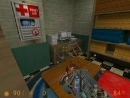

I’d like to see some classic CS maps make it into there. You know, cs_assault or cs_militia maybe? de_prodigy always reminded me of the Black Mesa facility. Speaking of a facility, how about Facility from Goldeneye, or maybe Complex (the Perfect Dark version).
I’d like to see the original HLDM maps. That’s it.
Tempted to try and rework Lockdown myself - maybe sans Gluon to keep it competitive.
Some of the CS:S converted maps were quite popular on our old HL2DM server and played surprisingly well.
I only care for the originals. Everything else I can make.
I don’t want to see any HL2 maps remade for BM. That would make no sense. Also, they’re all pretty bad.
Doublecross.
That was the point of the thread and the inevitable maps that will be made for BMDM. The wiki outlines the maps that are planned on release.
An opinion yes, but DM fans would appreciate some of the Gems that made it into competitive play. https://www.vosoghi.net/biohazard/ is one of the finest examples of mapping tailored specifically for 2-8 player arena style gaming.
On a side note I just tried Adrenalin Gamer 2 and the feel of the game is vastly superior to that of HLDM:Source - almost retains the magic of the original.
Pity Deathmatch is now a genre format.
I wish all the originals could be made, more is ok if they’re good, less will make me sad.
USINETECH !!!
https://membres.multimania.fr/adam050986/usinetech/index.htm
Yeah I know… it’s my own map lol 
Cheers 
I hadn’t read that page…
OMG Undertow!!!
I used to love that map. That and crossfire.
Well, they really wouldn’t have to be remade. I’m pretty sure you can just copy the appropriate .bsp files into the maps folder, and I imagine it would work just fine. Seeing how this is all really just a mod, and the files all correlate anyways.
Heh, I did that to CS 1.6 maps, dropping them into the Wanted! “maps” folder and it actually worked. Albeit with altered sky boxes, but it was pretty sweet. HLDM maps worked too. But that was 1.6; Source might have changed that, however experimentation might actually reveal something grand.
I did try putting a CS: Source map into the CS:CZ “maps” folder, and oddly enough, it worked, albeit with degraded textures. It was actually kinda funny.
I’d love to see somebody remake a map called “turkeyburgers” for Half-Life.
Very low resolution on these pictures…

Has the same concept as the “rats_” maps for Counter-Strike
That wouldn’t work too well due to weapon differences though it wouldn’t take much to rework HL2DM maps.
yeah turkeyburger and rats are nice map… they were thousand more funny then the de_rats version…
…errr did I told you that Usinetech was #1 in a french contest ??? …
…mmmkkay gonna stop talking about myself… :zip:…
hmmmm.
q3 --> the longest yard 
I will port some popular EHLL maps to BMS DM…
I have also done a port of q3dm6 aka “the campgrounds” from quake 3.
Let’s hope I am good enaugh in Source mapping to get these maps work and look good in Black Mesa. (:
hmmm i love q3dm6
I’d like to see rats_chicco_bedroom or kribrats.
Too big. Aerowalk, on the other hand…
and dm14??
its cool